Deo 1 Rad sa slikama
1.1 Uvodna priča
Pre nego li predjemo na sama rešenja zadataka, ukratko ćemo opisati nekoliko funkcija iz paketa ssoftveR koje se koriste.
Naime, u ovim zadacima uvek je potrebno uraditi neku manipulaciju sa oblikom na slici. U prvom zadatku je taj oblik kvadrat, u drugom može biti i krug, ali i neki nepoznati (treba da prepoznamo da li je krug/pravougaonik ili ne).
Stoga paket sadrži funkcije koje se bave pronalaženjem oblika na slici i njihovim klasifikovanjem. Te funkcije su get_shapes i classify_shape.
1.1.1 Pronalaženje i klasifikacija oblika
Prvo ćemo na primeru objasniti kako get_shapes pronalazi sve oblike na slici i vraća ih u listi. Princip je vrlo jednostavan. Pre svega:
Oblik definišemo kao povezan skup piksela iste boje.
Učitajmo sliku koju koristimo za primer:
library(imager)
im <- load.image("images/shapes_demo.png")Ona ima dosta oblika na sebi koje ćemo detektovati i klasifikovati. Pogledajmo odmah krajnji rezultat, da znamo šta nas čeka, pa ćemo proći korak po korak šta se radi.
library(ssoftveR)
# stavicemo dve slike jednu ispod druge i moramo da podesimo margine
layout(1:2)
par(mar = c(0.2,0,1.3,0))
# plotujemo pocetnu sliku
plot(im, axes = FALSE)
# nadjemo sve oblike na slici
shapes <- get_shapes(im)
# jos jednom plotujemo originalnu sliku pa cemo na nju dodati tekst
plot(im, axes = FALSE, main = "⬇")
# na svaki oblik dostampamo koji je oblik, tj. klasifikujemo ga
sapply(shapes, function(s) {
cl <- classify_shape(s)
text(s$centroid[1], s$centroid[2], cl[2], col = 'white', cex = 1)
})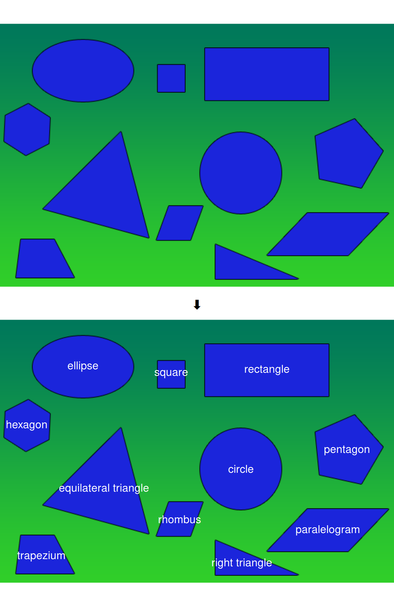
Sve oblike smo tačno klasifikovali! Prodjimo sada osnovne korake.
1.1.1.1 Pronalaženje oblika
Prvo želimo da nadjemo povezane delove slike koji su identične boje. S tim ciljem, koristimo funkciju solid_blobs da pretvorimo sliku u tzv. pixset ( sliku čije je svaki piksel ili TRUE ili FALSE) koji nam za svaki piksel govori da li je ćlan homogene jednobojne sredine ili nije.
To radimo tako što definišemo neku okolinu1, npr. u obliku krsta:
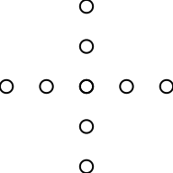
pa prodjemo kroz celu sliku piksel po piksel, pri čemu za svaki piksel proverimo za ovako definisanu okolinu (u ovom slučaju trenutni piksel u sredini i po dva piksela u svakom pravcu) da li su svi pikseli iste boje. Ako jesu, trenutni piksel postavimo na TRUE, u suprotnom postaje FALSE.
Pogledajmo rezultat koji dobijamo kad uradimo ovo za našu sliku:
plot(solid_blobs(im), axes = FALSE)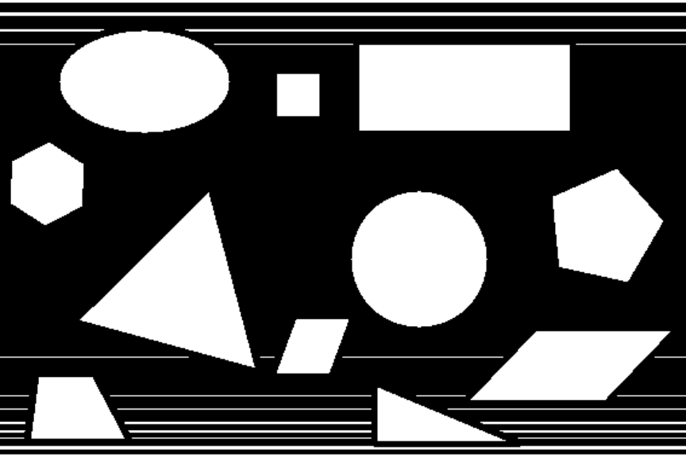
Svi oblici su postali beli (=TRUE), ali, nažalost, i za neke duge linije smo zaključili da su homogene. Postoji način da se to prevazidje2, što radi get_shapes funkcija (videli smo da daje dobar rezultat), ali možemo i samo da povećamo veličinu okoline koju gledamo, npr. neka je sada dužina stranice krsta 9, a ne 5.
blobs <- solid_blobs(im, cr_n = 9)
plot(blobs, axes = FALSE)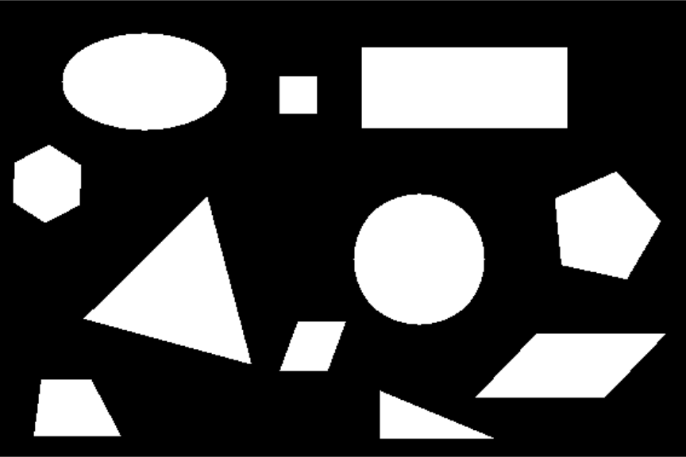
Sada iz ovakve slike vrlo jednostavno, uz pomoć paketa imager, da izvučemo sve povezane celine, koje ćemo pretvoriti u oblike. Za to nam služi funkcija split_connected. Dakle, jednostavno dobijamo:
connected <- imager::split_connected(blobs)
print(connected)## Image list of size 11Dobili smo 11 slika, zapravo pixset-ova, gde svaki pixset predstavlja jedan oblik, tj jednu povezanu celinu u prethodnoj (crno-beloj) slici.
Na kraju, hoćemo da ove pixset-ove pretvorimo u nešto sa čim možemo lepo da radimo. To će biti objekti klase shape, koji su definisani u ssoftveR paketu.
shapes <- lapply(connected, shape_from_pixset)Vidimo da je funkcija shape_from_pixset glavna ovde. Demonstrirajmo šta ona radi i vidimo kako izgleda jedan objekat klase shape.
# uzmimo jedan oblik
pixset <- connected[[7]]
# vidimo sta smo uzeli
plot(pixset, axes = FALSE)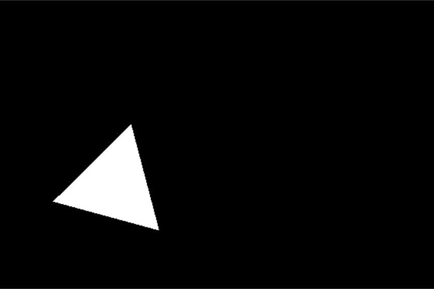
# pretvorimo ga u objekat klase 'shape'
shape <- shape_from_pixset(pixset)
# prikazimo rezultat
plot(shape, axes = FALSE)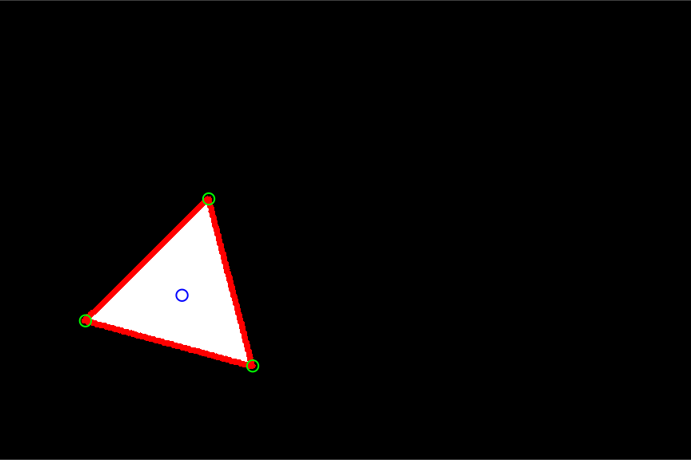
Vidimo da je slika za shape dosta drugačija od same slike za izvučeni pixset. Naime, vidimo da su sva temena obeležena, kao i sve stranice i centar oblika. To sve izvlači funkcija shape_from_pixset, uz korišćenje još nekih funkcija iz paketa, u koje nećemo sada zalaziti (naime, glavne od njih su get_sides i get_vertices, ali su dosta komplikovane da bi se bavili njima ovde).
Pogledajmo strukturu objekta shape da steknemo sliku šta se tu sve nalazi.
str(shape)## List of 6
## $ pixset : 'pixset' logi [1:567, 1:378, 1, 1] FALSE FALSE FALSE FALSE FALSE FALSE ...
## $ xy :'data.frame': 8962 obs. of 2 variables:
## ..$ x: num [1:8962] 171 172 170 171 172 169 170 171 172 168 ...
## ..$ y: num [1:8962] 164 164 165 165 165 166 166 166 166 167 ...
## $ contours:List of 1
## ..$ :List of 3
## .. ..$ level: num 1
## .. ..$ x : num [1:555] 70 70 70 71 72 ...
## .. ..$ y : num [1:555] 264 264 264 264 264 ...
## $ centroid: Named num [1:2] 150 243
## ..- attr(*, "names")= chr [1:2] "x" "y"
## $ sides :List of 3
## ..$ :List of 4
## .. ..$ x : num [1:138] 71 72 73 74 75 76 77 78 79 80 ...
## .. ..$ y : num [1:138] 264 264 265 265 265 ...
## .. ..$ direction: Named num [1:2] 0.965 0.264
## .. .. ..- attr(*, "names")= chr [1:2] "x" "y"
## .. ..$ slope : Named num 15.3
## .. .. ..- attr(*, "names")= chr "deg"
## .. ..- attr(*, "class")= chr [1:2] "side" "list"
## ..$ :List of 4
## .. ..$ x : num [1:138] 208 207 207 207 207 ...
## .. ..$ y : num [1:138] 301 300 299 298 297 ...
## .. ..$ direction: Named num [1:2] -0.255 -0.967
## .. .. ..- attr(*, "names")= chr [1:2] "x" "y"
## .. ..$ slope : Named num 75.2
## .. .. ..- attr(*, "names")= chr "deg"
## .. ..- attr(*, "class")= chr [1:2] "side" "list"
## ..$ :List of 4
## .. ..$ x : num [1:103] 172 171 170 169 168 ...
## .. ..$ y : num [1:103] 164 164 165 166 167 ...
## .. ..$ direction: Named num [1:2] -0.707 0.707
## .. .. ..- attr(*, "names")= chr [1:2] "x" "y"
## .. ..$ slope : Named num -45
## .. .. ..- attr(*, "names")= chr "deg"
## .. ..- attr(*, "class")= chr [1:2] "side" "list"
## $ vertices:List of 3
## ..$ x : num [1:3] 71 208 172
## ..$ y : num [1:3] 264 301 164
## ..$ angle: num [1:3] 60.3 59.9 59.8
## - attr(*, "class")= chr [1:2] "shape" "list"Dakle, imamo originalni pixset, izvučene konture oblika, centar, sve stranice i sva temena. Stranice sadrže koordinate svih tačaka, (jedinični)vektor pravca i nagib. Temena sadrže koordinate, kao i ugao kod svakog temena.
1.1.1.2 Klasifikacija oblika
Do sada smo, dakle, izvukli sve oblike sa slike. Sada bi trebalo da ih klasifikujemo. U to nećemo toliko detaljno ulaziti, već ćemo samo navesti koje prediktore koristimo, pri čemu koristimo multinomni model (multinom) za klasifikaciju.
Dakle, prediktore koje koristimo za prepoznavanje oblika su:
- Disperzija udaljenosti od centra (
centroid_distance_variance): - Kao što ime kaže, merimo disperziju udaljenosti tačaka sa konture oblika od centra. Ideja je da će to moći da razlikuje krug od elipse (kod kruga je disperzija bliska nuli), ali i mnoge druge oblike (kvadrat ima manju disperziju od pravougaonika i sl.).
- Disperzija udaljenosti od centra (
- Broj temena (
vertex_count): - Ovo je očigledno, krug i elipsa imaju 0, trouglovi 3, četvorouglovi 4 temena, itd. Ovaj prediktor čemo tretirati u modelu kao faktorsku promenljivu.
- Broj temena (
- Disperzija dužina stranica (
side_length_variance): - Ovde je ideja slična kao u prvom prediktoru, ali je ovde poenta da će regularni poligoni imati disperziju približnu nuli (jednakostraničan trougao, kvadrat, romb, petougao, šestougao), a ostali oblici će imati neke veće vrednosti. Za krug i elipsu stavljamo da je ova disperzija nula.
- Disperzija dužina stranica (
- Disperzija uglova (
angle_variance): - Merimo disperziju uglova na temenima. Ovo liči na prethodni prediktor, ali ovaj prediktor nam daje mogućnost da razlikujemo pravougaonike od paralelograma. Kvardat i romb imaju isti broj temena i disperziju dužina stranica (0), ali kod kvadrata je i disperzija uglova nula, dok kod romba nije.
- Disperzija uglova (
- Disperzija zbirova susednih uglova (
adj_angle_sum_variance): - Kod ovog prediktora inspiracija je bila to što znamo da je kod paralelograma zbir dva susedna ugla uvek \(\pi\), pa je disperzija tad nula. Time dobijamo jedan način razlikovanja paralelograma i trapeza.
- Disperzija zbirova susednih uglova (
Kada smo to demistifikovali, prodjimo jedan primer klasifikacije, da vidimo šta radi i funkcja classify_shape. Klasifikovaćemo naš trougao od ranije.
# uzmemo sve prediktore za nas shape. vracamo data.frame i ako negde imamo NA,
# pretvorimo ga u -1, da ne bismo imali problema sa modelom.
predictors <- get_shape_predictors(shape, df = TRUE, na_replacement = -1)
# stampamo rezultat
predictorsVidimo da imamo 3 temena, da su disperzije dužina stranica, uglova i zbirova susednih uglova bliske nuli, što je i očekivano jer je ovo jednakostraničan trougao. Da li će i naš model isto to reći? Pa hoće, videli smo već na početku.
# klasifikujemo oblik koristeci multinom model "shapes_model"
shape_class <- as.character(predict(get_shapes_model(), predictors))
# da vidimo sta smo dobili
c(code = shape_class, long_name = shape_code_map[[shape_class]])## code long_name
## "et" "equilateral triangle"Upravo smo ovaj rezultat i očekivali!
Dosta uvoda, predjimo sad na zadatke, ali to je sada trivijalno.
1.2 Zadaci
Ovde ćemo dati kodove koji rešavaju konkretne zadatke sa seminarskog.
1.2.1 Prvi zadatak
U prvom zadatku je trebalo da odredimo ugao rotacije pravougaonika, da rotiramo sliku tako da pravougaonik bude horizontalan i da je sačuvamo. To ćemo sve obuhvatiti funkcijom first (kod će biti na engleskom):
first <- function(im, file_in = NULL, file_out = NULL) {
if (!is.null(file_in)) im <- load.image(file_in)
shape <- get_shapes(im)[[1]]
side <- get_sides(shape)[[1]]
center <- shape$centroid
rot <- rotate_xy(im, -side$slope, center['x'], center['y'], boundary = 1)
if (!is.null(file_out)) save.image(rot, file_out)
# subtract slope from 90 because y axis is weird for images etc
list(rotated = rot, angle = 90 - side$slope)
}Dakle, primimo sliku im ili je učitamo iz fajla file_in, pronadjemo sve oblike na slici i uzmemo prvi, koji bi trebalo da je jedini, uzmemo jednu njegovu stranicu, rotiramo ga oko centra za (-)nagib stranice i sačuvamo sliku ako je dat fajl file_out. Na kraju vratimo rotiranu sliku i nagib pravougaonika u listi.
Pogledajmo kod u akciji: {.tabset}
im <- load.image("images/first_test.png")
plot(im, axes = FALSE)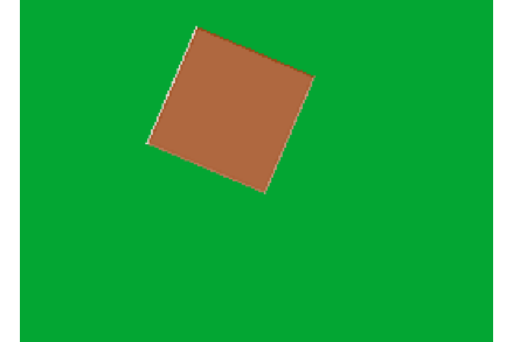
res <- first(im)
print(res$angle)## deg
## 66.96448plot(res$rotated, axes = FALSE)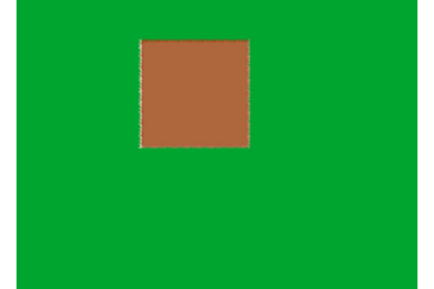
print(first(res$rotated)$angle)## deg
## 179.7518Vidimo da je greška u rotaciji manja od 1°.
1.2.2 Drugi zadatak
Ovaj zadatak je malo teži. Trebalo je da se proveri da li je na slici tačno jedan crni ili beli pravougaonik (krug) i, ako jeste, da se vrate koordinate njegovih temena (njegovog centra).
Prvo ćemo definisati funkciju koja klasifikuje sve oblike na slici i vrati i njihove boje. Ovde koristimo jako pametnu funkciju rgb2col iz paketa ssoftveR, koja odredjuje tačno ime boje (iz palete dostupne R-u) na osnovu njenih RGB vrednosti. Ona u suštini bira onu boju koja je najbliža datoj RGB vrednosti, ali koristeći naprednu metriku datu u colorscience paketu. Ta metrika je deltaE2000 (https://en.wikipedia.org/wiki/Color_difference#CIEDE2000)
shape_names_and_colors <- function(im, shapes = NULL) {
im <- flatten.alpha(im)
if (is.null(shapes)) shapes <- get_shapes(im)
# we transpose to get code and long_name columns
shape_classes <- t(sapply(shapes, classify_shape))
shape_colors <- sapply(shapes, function(s) {
cxy <- round(s$centroid)
# rescale rgb to 0-255
rgb <- im[cxy[1], cxy[2], 1, ] * 255
# get color name
rgb2col(rgb)
})
cbind(shape_classes, color = shape_colors)
}Proverimo je na našoj slici
shape_names_and_colors(im)## code long_name color
## [1,] "sq" "square" "salmon3"Dakle ovo je neka boja lososa, recimo…
Sada jednostavno rešavamo drugi zadatak u funkciji second.
second <- function(im, file_in = NULL, circle = FALSE) {
if (!is.null(file_in)) im <- load.image(file_in)
shapes <- get_shapes(im)
snc <- shape_names_and_colors(im, shapes)
if (!circle) {
if (length(snc[ ,1]) != 1)
stop("The image doesn't contain exactly one shape!")
if (!(snc[1, 'code'] %in% c('sq', 're')))
stop("The shape in the image isn't a rectangle or a square!")
if(!(snc[1, 'color'] %in% c("white", "black")))
stop("The shape in the image isn't white or black!")
# plot shape
plot(shapes[[1]], axes = FALSE)
# return shape vertices (and their coordinates)
shapes[[1]]$vertices
} else {
if (length(snc[ ,1]) != 1)
stop("The image doesn't contain exactly one shape!")
if (!(snc[1, 'code'] == "ci"))
stop("The shape in the image isn't a circle!")
if(!(snc[1, 'color'] %in% c("white", "black")))
stop("The shape in the image isn't white or black!")
shape <- shapes[[1]]
plot(shape, axes = FALSE)
contour <- shape$contours[[1]]
# Calculating distances from the centroid of all points on the contour
distances <- sqrt((contour$x - shape$centroid['x'])^2 +
(contour$y - shape$centroid['y'])^2)
# return circle center and radius
cbind(t(shape$centroid), radius = mean(distances))
}
}Ako stavimo circle = TRUE, rešavamo zadatak 2.v, inače rešavamo 2.b.
Probajmo našu sliku
second(im, circle = FALSE)## Error in second(im, circle = FALSE): The shape in the image isn't white or black!second(im, circle = TRUE)## Error in second(im, circle = TRUE): The shape in the image isn't a circle!Radi lepo, hajde sada par slika za koje će da prodje.
im1 <- load.image('images/second_test_square.bmp')
plot(im1, axes = FALSE)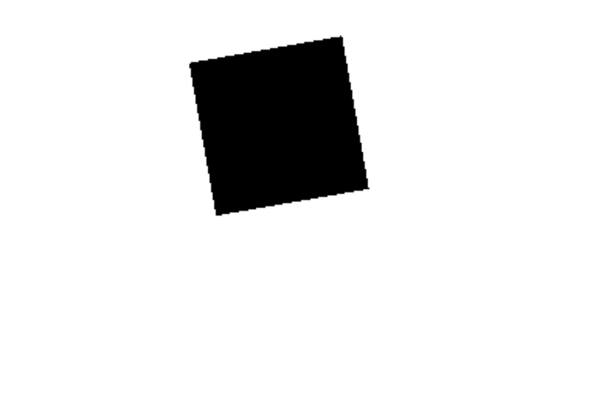
im2 <- load.image('images/second_test_circle.png')
plot(im2, axes = FALSE)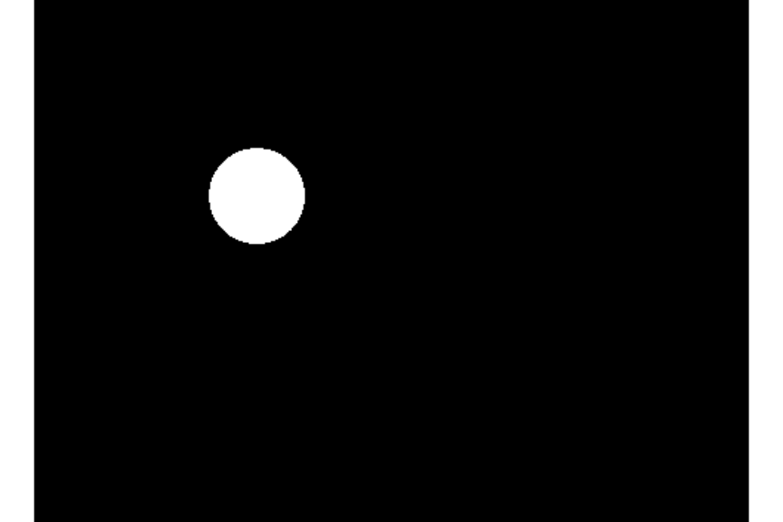
second(im1)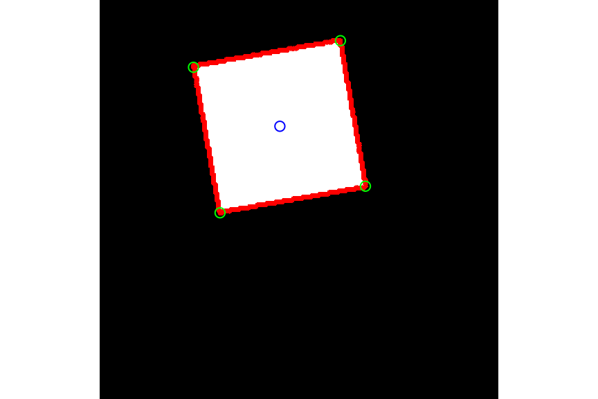
## $x
## [1] 61.000 78.000 171.001 155.000
##
## $y
## [1] 44.001 137.001 120.000 26.999
##
## $angle
## [1] 90.04117 90.01907 89.86820 90.07157second(im2, circle = TRUE)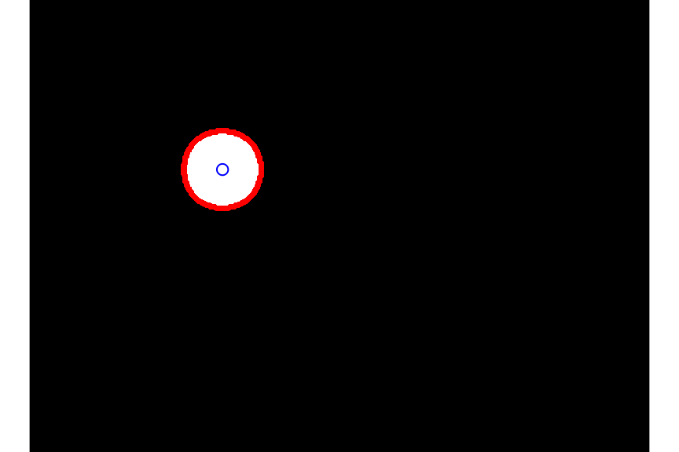
## x y radius
## [1,] 151.0373 133.0373 30.25643I to bi bilo sve što se tiče rada sa slikama.